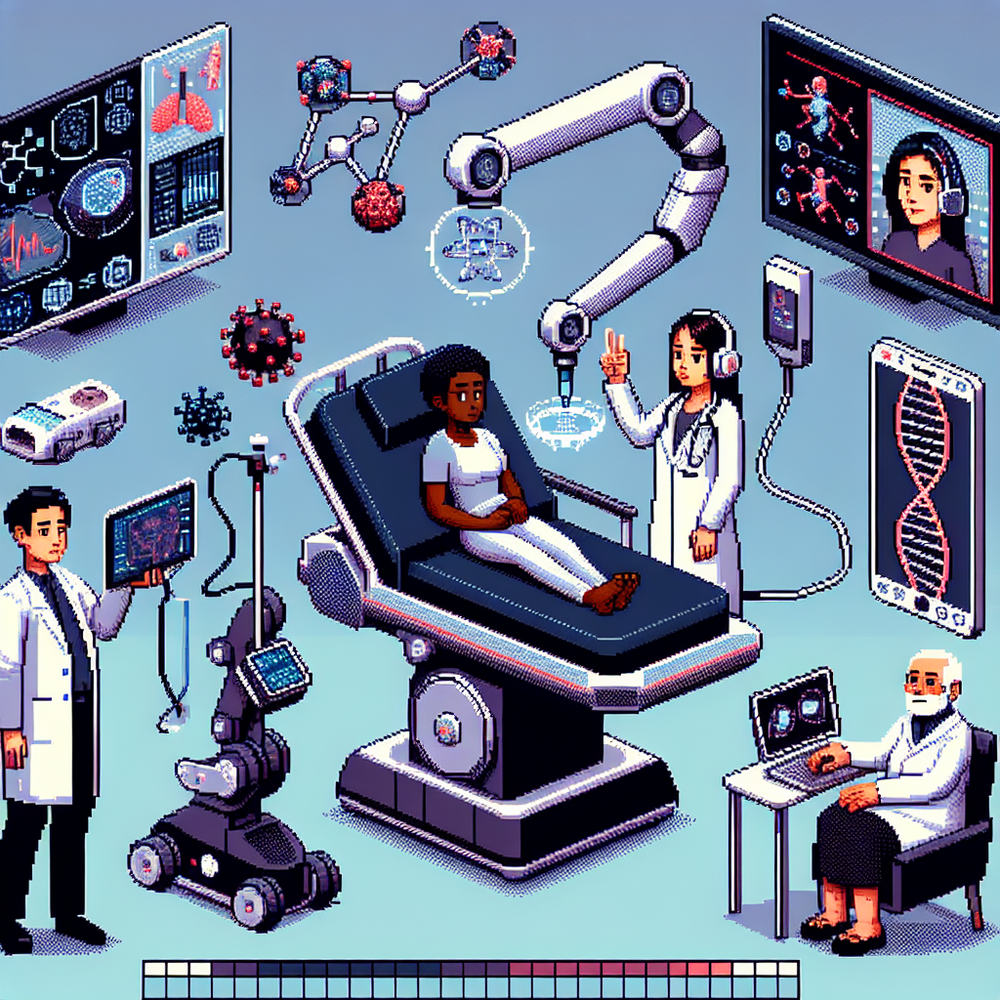

The Future of Machine Learning in Healthcare
**The Future of Machine Learning in Healthcare**
*Published on February 7, 2025*
*Tags: tech, machine-learning, radiology*
---
In recent years, the integration of machine learning into various fields has transformed the landscape of technology, and healthcare is no exception. From predictive analytics to robotic surgeries, the potential applications are vast and exciting. However, when it comes to radiology, I believe there are significant limitations to what AI can achieve. In this post, I will discuss the cons of machine learning in radiology and articulate why I firmly believe that AI will never fully replace the radiologist.
### The Limitations of Machine Learning in Radiology
1. **Contextual Understanding**
One of the primary challenges with machine learning algorithms is their lack of contextual understanding. While AI can analyze images and identify patterns, it lacks the nuanced comprehension that a human radiologist possesses. For instance, a radiologist doesn't just look at images; they consider the patient's history, symptoms, and other diagnostic tests. This holistic approach is crucial in making accurate diagnoses.
2. **Complexity of Human Anatomy**
Human anatomy is intricate and varies significantly from patient to patient. While machine learning models can be trained on vast datasets, they may struggle with atypical presentations or rare conditions. Radiologists are trained to recognize these complexities and can often make critical decisions based on subtle cues that AI might overlook.
3. **Ethical Considerations**
The use of AI in healthcare raises ethical questions that cannot be ignored. Who is responsible for a misdiagnosis made by an AI system? Can patients trust a machine to make decisions about their health? These questions are particularly pertinent in radiology, where the stakes are high, and the consequences of errors can be severe.
4. **Need for Human Oversight**
Even as AI technology advances, the need for human oversight remains paramount. Radiologists not only interpret images but also communicate findings to other healthcare providers and patients. They play a critical role in educating and reassuring patients about their conditions—an aspect that AI cannot replicate.
5. **Continuous Learning and Adaptation**
The medical field is ever-evolving, with new research and techniques emerging regularly. Radiologists engage in continuous learning, adapting their approaches based on the latest evidence and clinical guidelines. While machine learning models can be updated, they do not possess the innate ability to learn and apply knowledge in the same way that humans do.
### Conclusion: A Collaborative Future
In conclusion, while machine learning has the potential to enhance radiology by assisting in image analysis and workflow efficiency, it is unlikely to replace the radiologist. The human element—judgment, empathy, and contextual understanding—remains irreplaceable in healthcare. Instead, I envision a future where radiologists and AI coexist, working collaboratively to improve patient outcomes. By leveraging the strengths of both, we can create a more effective and compassionate healthcare system.
As we move forward, it's essential to approach the integration of AI in healthcare with a balanced perspective. Emphasizing collaboration over replacement will ensure that we harness the full potential of technology while maintaining the human touch that is so vital in medicine.
---
Thank you for reading! If you have thoughts or experiences related to machine learning in healthcare, I’d love to hear from you in the comments below.